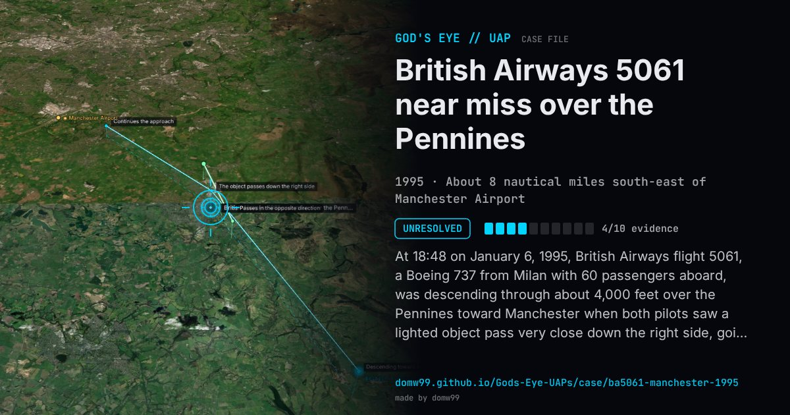

British Airways 5061 near miss over the Pennines

At 18:48 on January 6, 1995, British Airways flight 5061, a Boeing 737 from Milan with 60 passengers aboard, was descending through about 4,000 feet over the Pennines toward Manchester when both pilots saw a lighted object pass very close down the right side, going the other way. They described it as wedge-shaped, with small white lights and a black stripe; the first officer ducked as it went by. Nothing showed on radar. The Joint Airmiss Working Group studied the report and, unable to identify the object, called it “unassessable”.
Explanation
The Civil Aviation Authority’s Joint Airmiss Working Group could not identify the object and rated the airmiss “unassessable”. No other aircraft or balloon was found, and no radar return was seen.
What was seen
Shape: Wedge-shaped object with small white lights and a black stripe
Witnesses: Capt. Roger Wills and First Officer Mark Stuart
Duration: About 2 seconds
Sources
Browse
- United Kingdom
- 1990s
- Unresolved
- Aviation encounters
- Official government documents
- Pilot and aircrew witnesses
- Lights and fireballs